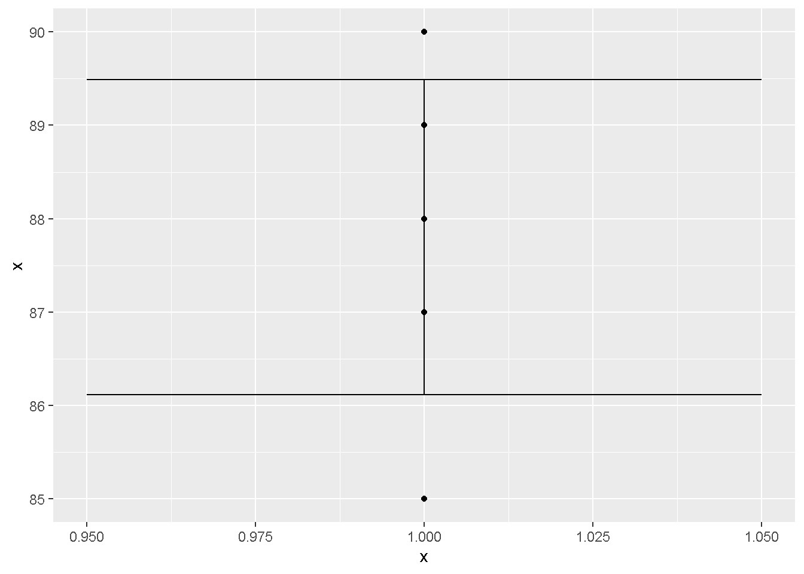
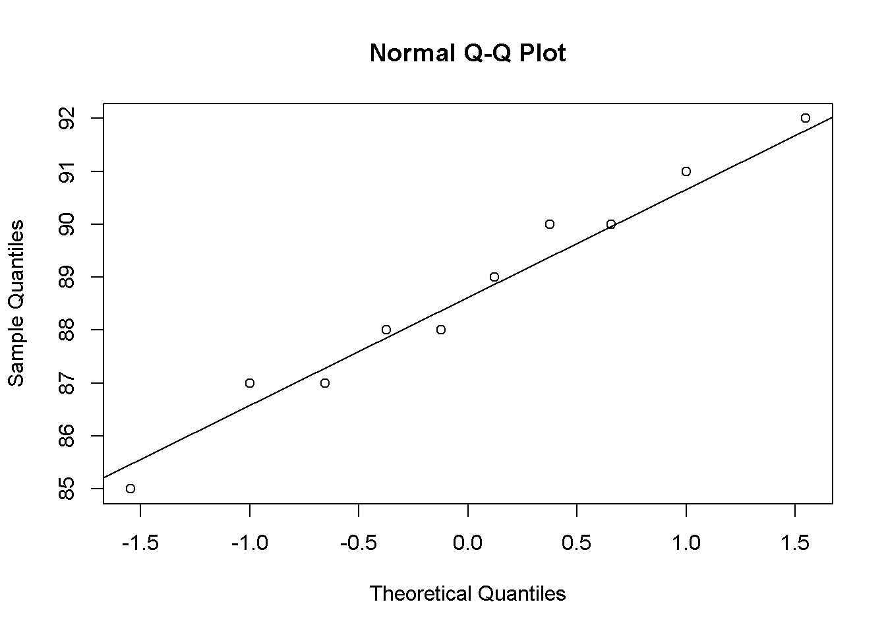
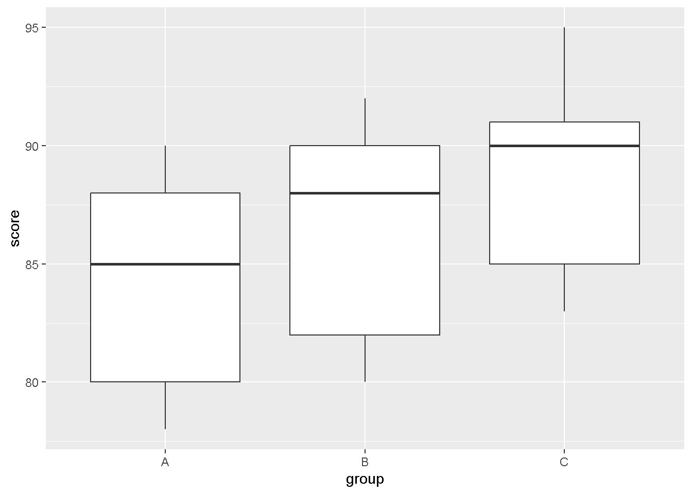
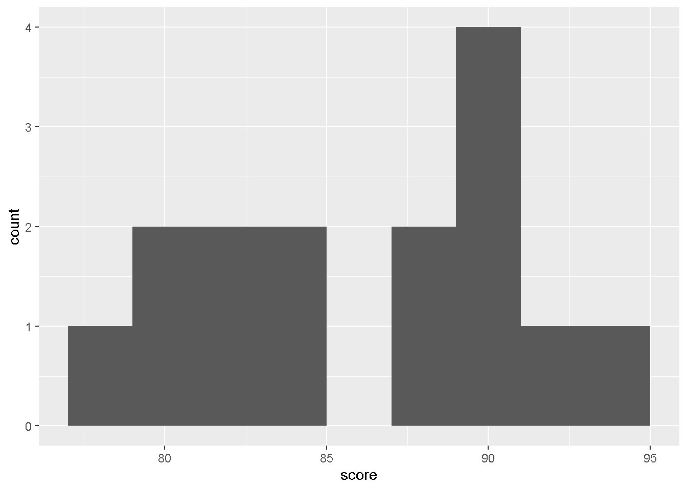
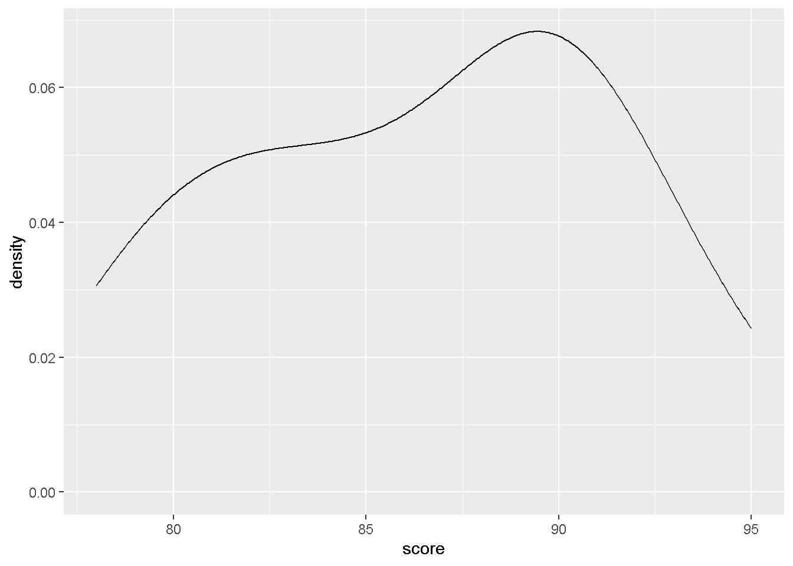

Code
data <- c(4, 8, 6, 5, 3)
mean(data)[1] 5.2Code
median(data)[1] 5Code
sd(data)[1] 1.923538This eBook is a comprehensive companion to the course Basic Statistics using GUI-R (RKWard). It includes foundational theory, practical examples, and step-by-step explanations, with integrated GUI-R usage.
Basic Statistics using GUI-R (RKWard)
Dr. Harsh Pradhan is Assistant Professor at the Institute of Management Studies, Banaras Hindu University.
📎 Faculty Profile
data <- c(4, 8, 6, 5, 3)
mean(data)[1] 5.2median(data)[1] 5sd(data)[1] 1.923538\[ SE = \frac{s}{\sqrt{n}} \]
Small SE = sample mean is a good estimate of the population mean.
For \(n > 30\), sampling distribution of the mean approximates normal:
\[ \bar{X} \sim \mathcal{N}(\mu, \frac{\sigma}{\sqrt{n}}) \]
\[ CI = \bar{x} \pm Z \cdot \frac{s}{\sqrt{n}} \]
Interpret 95% CI as: 95 of 100 such intervals would contain the true mean.
| Type | Description | Example |
|---|---|---|
| Point Estimate | Single value | Sample mean |
| Interval Estimate | Range + confidence | Confidence Int |
| Term | Description |
|---|---|
| Parameter | Value from population (e.g., \(\mu\)) |
| Statistic | Value from sample (e.g., \(\bar{x}\)) |
| Test Type | Description |
|---|---|
| One-Sample | Compare sample to fixed value |
| Independent | Compare two unrelated groups |
| Paired | Compare two related groups |
data <- c(22, 24, 27, 26, 28, 23, 25, 29, 21, 26, 24, 27)
t.test(data, mu = 25)
One Sample t-test
data: data
t = 0.2363, df = 11, p-value = 0.8175
alternative hypothesis: true mean is not equal to 25
95 percent confidence interval:
23.61427 26.71906
sample estimates:
mean of x
25.16667 \[ t = \frac{\bar{x} - \mu}{SE} \]
\[ df = n - 1 \]
Compare calculated \(t\) to table value. If \(|t| > t_{critical}\), reject \(H_0\).
Used when comparing means across 3+ groups.
\[ F = \frac{MS_{between}}{MS_{within}} \]
Where:
| Group | Mean | Var | n |
|---|---|---|---|
| A | 5.5 | 1.5 | 30 |
| B | 7.1 | 2.0 | 30 |
| C | 6.8 | 1.8 | 30 |
Run if ANOVA is significant to locate pairwise differences.
\[ \text{Total Variance} = \text{Explained Variance} + \text{Unexplained Variance} \]
| Explained Terms | Unexplained Terms |
|---|---|
| Systematic | Random |
| Predictive | Error |
| Deterministic | Noise |
For equation \(x + y + z = 3\), if 2 values are known, third is fixed.
Hence, \(df = n - k\) where \(n\) = total variables, \(k\) = constraints.
| Type | Variables | Example |
|---|---|---|
| Univariate | 1 | Height |
| Bivariate | 2 | Height vs Weight |
| Multivariate | >2 | Study w/ Age, Gender, Income |
If assumptions violated → use non-parametric test.
\[ \text{Effect Size} = \frac{|\mu_1 - \mu_2|}{\sigma} \]
Used for comparison across studies.
\[ \text{Power} = 1 - \beta \]
Higher power → lower chance of Type II error
Power increases with sample size, effect size
Statistics is the language of data. GUI-R makes statistical tools accessible for everyone. This book empowers you to analyze data effectively using t-tests, ANOVA, and confidence intervals in a GUI environment.
Used when the same group is measured twice (e.g., before and after).
before <- c(80, 82, 79, 84, 88)
after <- c(78, 81, 76, 83, 86)
t.test(before, after, paired = TRUE)
Paired t-test
data: before and after
t = 4.8107, df = 4, p-value = 0.008581
alternative hypothesis: true mean difference is not equal to 0
95 percent confidence interval:
0.7611494 2.8388506
sample estimates:
mean difference
1.8 Compare means of two unrelated groups.
group1 <- c(85, 90, 88, 92, 87)
group2 <- c(80, 83, 85, 84, 82)
t.test(group1, group2)
Welch Two Sample t-test
data: group1 and group2
t = 3.7755, df = 7.226, p-value = 0.006537
alternative hypothesis: true difference in means is not equal to 0
95 percent confidence interval:
2.114814 9.085186
sample estimates:
mean of x mean of y
88.4 82.8 x <- c(88, 90, 85, 87, 89)
mean_x <- mean(x)
se <- sd(x) / sqrt(length(x))
ci_lower <- mean_x - 1.96 * se
ci_upper <- mean_x + 1.96 * se
c(ci_lower, ci_upper)[1] 86.11394 89.48606Plot using ggplot2:
library(ggplot2)
df <- data.frame(x = x)
ggplot(df, aes(y = x, x = 1)) +
geom_point() +
geom_errorbar(aes(ymin = ci_lower, ymax = ci_upper), width = 0.1)
Examines the effect of two categorical independent variables on a continuous dependent variable.
# Sample dataset for demonstration
dataset <- data.frame(
score = c(85, 90, 88, 92, 87, 80, 83, 85, 84, 82),
gender = rep(c("Male", "Female"), each = 5),
teaching_method = rep(c("A", "B"), times = 5)
)
aov_result <- aov(score ~ gender * teaching_method, data = dataset)
summary(aov_result) Df Sum Sq Mean Sq F value Pr(>F)
gender 1 78.40 78.40 23.718 0.00279 **
teaching_method 1 6.02 6.02 1.820 0.22598
gender:teaching_method 1 18.15 18.15 5.491 0.05759 .
Residuals 6 19.83 3.31
---
Signif. codes: 0 '***' 0.001 '**' 0.01 '*' 0.05 '.' 0.1 ' ' 1Use when the same subjects are used for each treatment.
# Sample repeated measures data in long format
data_long <- data.frame(
id = rep(1:5, each = 3),
condition = rep(c("A", "B", "C"), times = 5),
score = c(85, 88, 90, 80, 82, 85, 78, 80, 83, 90, 92, 95, 88, 90, 91)
)
library(ez)
ezANOVA(data = data_long, dv = .(score), wid = .(id), within = .(condition))Warning: Converting "id" to factor for ANOVA.Warning: Converting "condition" to factor for ANOVA.$ANOVA
Effect DFn DFd F p p<.05 ges
2 condition 2 8 88.22222 3.539139e-06 * 0.1479687
$`Mauchly's Test for Sphericity`
Effect W p p<.05
2 condition 0.5555556 0.4140867
$`Sphericity Corrections`
Effect GGe p[GG] p[GG]<.05 HFe p[HF] p[HF]<.05
2 condition 0.6923077 9.135419e-05 * 0.9411765 6.568851e-06 *\[ d = \frac{\bar{x}_1 - \bar{x}_2}{s_p} \]
Where \(s_p\) is the pooled standard deviation.
library(effsize)
cohen.d(group1, group2)
Cohen's d
d estimate: 2.387848 (large)
95 percent confidence interval:
lower upper
0.4791634 4.2965327 Used for ANOVA:
\[ \eta^2 = \frac{SS_{between}}{SS_{total}} \]
Use Shapiro-Wilk test:
# Sample data frame for normality test
data <- data.frame(variable = c(88, 90, 85, 87, 89, 91, 92, 88, 90, 87))
shapiro.test(data$variable)
Shapiro-Wilk normality test
data: data$variable
W = 0.97743, p-value = 0.95Visualize:
qqnorm(data$variable)
qqline(data$variable)
Use Levene’s Test:
# Sample data frame for Levene's Test
data <- data.frame(
variable = c(88, 90, 85, 87, 89, 91, 92, 88, 90, 87),
group = rep(c("A", "B"), each = 5)
)
library(car)Loading required package: carDataleveneTest(variable ~ group, data = data)Warning in leveneTest.default(y = y, group = group, ...): group coerced to
factor.Levene's Test for Homogeneity of Variance (center = median)
Df F value Pr(>F)
group 1 0.0769 0.7885
8 wilcox.test(before, after, paired = TRUE)Warning in wilcox.test.default(before, after, paired = TRUE): cannot compute
exact p-value with ties
Wilcoxon signed rank test with continuity correction
data: before and after
V = 15, p-value = 0.05676
alternative hypothesis: true location shift is not equal to 0wilcox.test(group1, group2)Warning in wilcox.test.default(group1, group2): cannot compute exact p-value
with ties
Wilcoxon rank sum test with continuity correction
data: group1 and group2
W = 24.5, p-value = 0.01597
alternative hypothesis: true location shift is not equal to 0Non-parametric alternative to ANOVA.
# Sample data frame for Kruskal-Wallis Test
data <- data.frame(
score = c(85, 88, 90, 80, 82, 85, 78, 80, 83, 90, 92, 95, 88, 90, 91),
group = rep(c("A", "B", "C"), times = 5)
)
kruskal.test(score ~ group, data = data)
Kruskal-Wallis rank sum test
data: score by group
Kruskal-Wallis chi-squared = 2.2329, df = 2, p-value = 0.3274ggplot(data, aes(x = group, y = score)) +
geom_boxplot()
ggplot(data, aes(x = score)) +
geom_histogram(binwidth = 2)
ggplot(data, aes(x = score)) +
geom_density()
This eBook, authored by Dr. Harsh Pradhan (Assistant Professor at the Institute of Management Studies, Banaras Hindu University), serves as a comprehensive guide to understanding and applying basic statistical concepts, particularly in the GUI-based software RKWard (GUI-R).
Key Highlights: 1. Descriptive Statistics Covers measures of central tendency (mean, median, mode) and variability (range, variance, standard deviation). Introduces standard error and its role in estimating population parameters. 2. Inferential Statistics Introduces the Central Limit Theorem and how it forms the foundation for many statistical techniques. Confidence intervals are explained both theoretically and with practical calculations. 3. T-Tests (Student’s t) Explains one-sample, independent-sample, and paired-sample t-tests. Includes step-by-step computation and GUI-R implementation. Includes interpretation of p-values, degrees of freedom, and test statistics. 4. Analysis of Variance (ANOVA) Covers one-way, two-way, and repeated measures ANOVA. Focuses on the F-statistic, assumptions, and post-hoc analyses. Discusses partitioning of variance into systematic and unsystematic components. 5. Effect Size and Statistical Power Introduces Cohen’s d, eta-squared, and power analysis. Emphasizes that statistical significance does not always imply practical importance. 6. Assumption Testing Tests for normality (Shapiro-Wilk, QQ plot). Tests for homogeneity of variance (Levene’s test). Highlights when to use non-parametric alternatives. 7. Non-Parametric Tests Introduces Wilcoxon signed-rank, Mann-Whitney U, and Kruskal-Wallis tests as robust alternatives to parametric methods. 8. Data Visualization in R Demonstrates use of boxplots, histograms, and density plots using ggplot2. Provides example R code for reproducibility. 9. GUI-R (RKWard) Usage Offers practical steps for using GUI-R for all statistical techniques covered. Designed to bridge the gap for learners unfamiliar with command-line R.